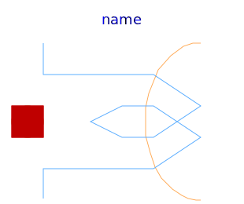
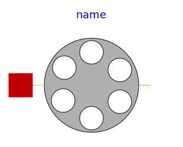

Components for quasi static machine models
| Name | Description |
|---|---|
|  SymmetricMultiPhaseWinding | Symmetric winding model coupling electrical and magnetic domain |
|
|
Quasi static single phase winding neglecting induced voltage |
|
|
Air gap model with rotor saliency |
|  SymmetricMultiPhaseCageWinding | Symmetrical rotor cage |
|
|
Rotor cage with saliency in d- and q-axis |
|
|
Permanent magnet model without intrinsic reluctance, represented by magnetic potential difference |